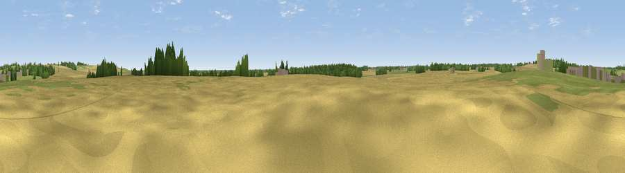

Viewpoint near Manthorpe
#44801 in England · top 86% of its area beats it · near ManthorpeWhere it is
The exact computed spot (TF 06892 15094). Click the marker for map links.
The view, rendered

A 360° render of this exact spot computed from the terrain model, tree cover and land cover — summer colours, afternoon light, calibrated against photographs of famous viewpoints. Real trees, hedges and buildings will differ in detail.
The panorama
Grey silhouette: terrain skyline in each direction (720 bearings, Earth curvature and refraction included). Dashed green: skyline with trees (+15 m) and buildings (+8 m) as obstacles. Blue strip: how far the ground is visible on each bearing.
Where the view opens
Wedge length = distance to the farthest visible ground on that bearing (vegetation-aware). Rings at 10, 25 and 50 km.
What fills the view
66% cropland · 25% grassland · 8% woodland ·
Angular shares of the visible panorama (visual magnitude), not map area. Landscape diversity 0.38 (0–1 Shannon).
Key numbers
More beautiful places nearby
The staircase of upgrades: each row has a higher view potential than everything closer. Driving times are estimates from straight-line distance, calibrated against real road routing — check an actual route before setting out.
| Place | Direction | Drive | Score |
|---|---|---|---|
| Viewpoint near Toft | NE · 2 km | ~6 min | 49.0 |
| Viewpoint near Belton | NNW · 27 km | ~44 min | 51.0 |
| Viewpoint near Barrowby | NW · 29 km | ~45 min | 53.5 |
| Viewpoint near Great Gonerby | NW · 29 km | ~46 min | 59.8 |
| Viewpoint near Great Gonerby | NNW · 30 km | ~47 min | 62.0 |
| Viewpoint near Burrough on the Hill | W · 31 km | ~48 min | 63.4 |
| Viewpoint near Burrough on the Hill | W · 31 km | ~48 min | 66.0 |
| Viewpoint near Belvoir | NW · 31 km | ~48 min | 68.9 |
52.72295, -0.41877 · source: osm peak · position refined by local search. Computed location — check access rights before visiting.